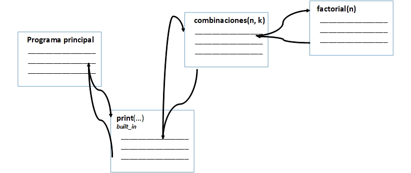
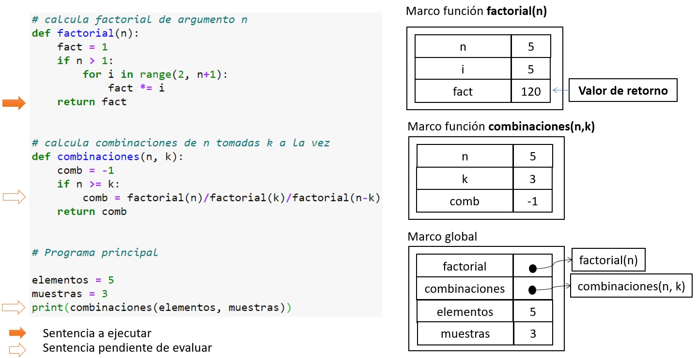
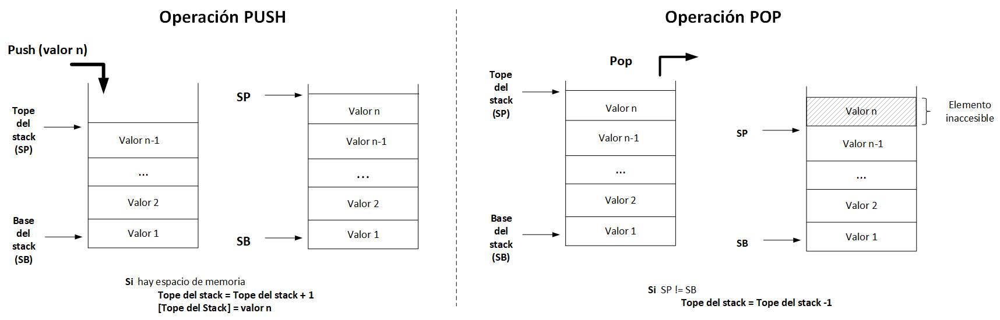
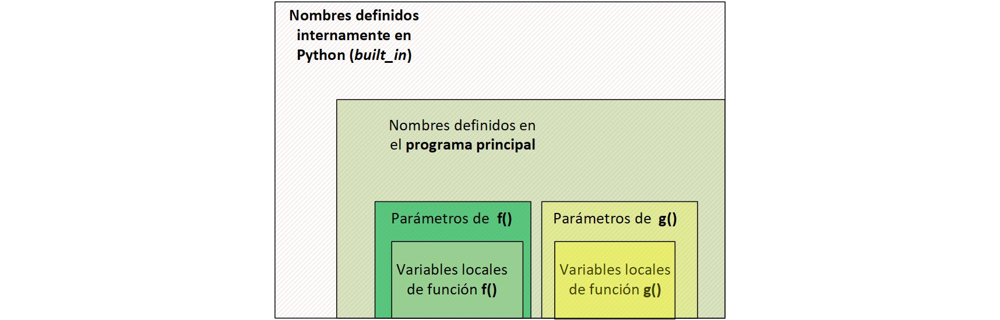
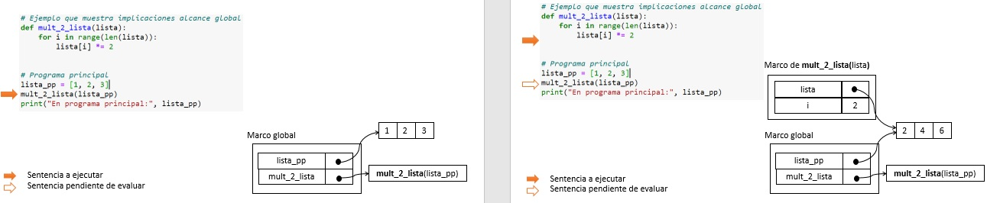

Funciones. Conceptos avanzados.¶
Autores: Rogelio Mazaeda, Félix Miguel Trespaderne.
Contenidos¶
Funciones puras e impuras
El mecanismo de las llamadas a funciones
Alcance de las variables: variables locales y globales
Recursividad
Las funciones como objetos
Funciones con un número indeterminado de argumentos
Polimorfismo con funciones
Resumen de buenas prácticas
Temas avanzados y bibliografía específica
Funciones puras e impuras¶
Las funciones de Python que tienen un comportamiento similar a las funciones matemáticas, esto es, constituyen una relación unívoca entre el dominio de los valores de entrada y el valor de la salida, se denominan funciones puras.

Se puede decir de las funciones puras que:
Devuelven el mismo resultado al ser llamadas con los mismos valores de entrada.
El resultado sólo depende de la entrada: no tienen memoria, no conservan un estado que les permita recordar que la misma ha sido invocada antes, para entonces devolver un valor distinto en llamadas sucesivas.
No tiene efectos secundarios (side effects). La única forma de interacción con el resto de programa, o el contexto en que éste se desarrolla, es a través de la sentencia
return. En especial:No modifican variables globales (se discute más adelante).
No imprime nada por pantalla, ni interaccionan de ninguna otra manera con el mundo exterior.
Las funciones impuras son el resto de las funciones. Por ejemplo:
Funciones sin parámetros de entrada y/o sin valores devueltos mediante
return.Funciones que devuelven valores diferentes cada vez.
Funciones que modifican las variables globales o aquellos parámetros que sean mutables.
Ventajas de las funciones puras¶
El trabajar preferentemente con funciones puras está en la base del paradigma funcional de programación, que en los últimos años está recobrando un nuevo auge.
El uso de funciones puras permite utilizar en programación las herramientas de análisis en las matemáticas y demostrar, en el sentido matemático del término, la corrección de un programa de ordenador. En cualquier caso, una descripción de los principios y prácticas de la programación funcional está fuera de los marcos de este curso introductorio.
Eso no impide que recomendemos, siempre que sea razonable, el uso funciones puras:
Al prohibir los efectos colaterales, hace que los programas sean más fácilmente depurables.
Permite además la composición de funciones: el pasar como argumentos de funciones, directamente el valor devuelto por otra función (con cualquier grado de anidamiento). Ejemplo:
cos(log(x)).
Las funciones impuras son inevitables¶
El objetivo de la programación es aceptar datos del mundo exterior, procesarlos de alguna forma y devolverlos al usuario. O sea, la utilidad global de los programas está precisamente en lograr determinados efectos colaterales.
En todo caso, resulta útil, confinar estás interacciones con el mundo exterior a determinadas funciones bien localizadas.
Ejemplos de funciones impuras imprescindibles o útiles:
Las funciones de entrada y salida, utilizando la consola, ficheros o redes informáticas, entre otras:
Por ejemplo, la función
input(): aunque sea llamada con el mismo parámetro de entrada, puede devolver cada vez valores diferentes: el usuario humano tiene un estado o memoria.
Función que devuelve un número aleatorio: resulta útil porque precisamente tiene memoria: devuelve un valor diferente cada vez.
El mecanismo de las llamadas a funciones¶
Como ya se ha dicho, las funciones permiten dar una estructura lógica a un programa al dividirlo en varios subprogramas, cada uno ocupándose de una tarea bien definida.
Este proceso de división del programa tiene un carácter jerárquico: el programa principal, en la parte más alta de la jerarquía, describe la solución desde el punto de vista más general, haciendo uso de las diferentes funciones para resolver las subtareas. Cada función, a su vez, puede ser dividida en otros tantos subproblemas, y así sucesivamente utilizando tantos niveles jerárquicos como se considere necesario.
Durante la ejecución del programa, el proceso de llamadas a funciones y el retorno desde estas, puede ser conceptualmente interpretado como recursos del lenguaje que modifican el flujo normal (secuencial) del programa.
Ejemplo¶
Se sabe de las matemáticas combinatorias que el número de posibilidades de escoger \(k\) elementos en una población de \(n\), las combinaciones, viene dado por la expresión:
\begin{align} \C_{n,k} = {n \choose k} = \frac {n!}{k!(n-k)!} \ \end{align}
Supongamos que se decide calcular las combinaciones mediante una función de Python, utilizando a su vez otra función que determina el factorial de un número entero.
# calcula factorial de argumento n
def factorial(n):
fact = 1
if n > 1:
for i in range(2, n+1):
fact *= i
return fact
# calcula combinaciones de n tomadas k a la vez
def combinaciones(n, k):
comb = -1
if n >= k:
comb = factorial(n)/(factorial(k)*factorial(n-k))
return comb
# Programa principal
elementos = 5
muestras = 3
print(combinaciones(elementos, muestras))
10.0
La estructura del programa anterior se podría visualizar gráficamente como se muestra. Se divide en el programa principal y dos funciones, combinaciones() y factorial(). Además se utiliza la función print(), que es una función nativa.

La información brindada por el esquema se limita básicamente a la estructura estática del programa, aunque con las flechas se muestra desde dónde se realizan las llamadas a las diferentes funciones, lo que indica una especie de jerarquía entre ellas para este ejemplo concreto:
El programa principal utiliza la función
print().A su vez
print()obtiene los valores a imprimir, a partir de utilizar la funcióncombinaciones().Finalmente,
combinaciones()se sirve de la funciónfactorial().
El programa principal utiliza la función combinaciones(); por tanto, la definición de esta última debe preceder en el texto del programa al primero. Por la misma razón, la función factorial() debe aparecer antes que combinaciones().
Traza de un programa¶
La ejecución de un programa en Python comienza en la primera línea del programa principal. A partir de ese punto se van ejecutando las sentencias siguiendo el orden secuencial por defecto, que puede ser alterado por las sentencias de control de flujo ya conocidas.
La presencia de las llamadas a función implica la modificación de ese orden por defecto.
Durante la ejecución de un programa, se van modificando los diferentes valores involucrados en la medida en que se van ejecutando las diferentes sentencias. Se puede hablar del hilo de ejecución a esta evolución de una sentencia a otra y los efectos producidos. Una forma de hacer evidente esta evolución es realizando la traza del programa.
La traza se puede ejecutar con lápiz y papel. Las herramientas de desarrollo, como Spyder, suelen tener incorporados depuradores del código (debuggers), que permiten también construir la traza. Existen también otras aplicaciones disponibles, como pythontutor, que ayudan en este propósito.
En lo que sigue se muestran algunos momentos de la traza del ejemplo previo.

Traza Ejemplo Combinaciones
A partir del análisis de la traza del programa se puede entender el mecanismo de las llamadas a función:
Cuando durante la evaluación de una sentencia aparece la invocación de una o varias funciones, la ejecución de la sentencia actual debe interrumpirse para ejecutar la(s) llamada(s) a la(s) función(es) involucrada(s). Si existen varias llamadas a la hora de evaluar una expresión, las llamadas se realizarán secuencialmente en el orden en que sea necesario y que se deriva del orden de evaluación de la expresión en que aparecen.
El proceso de llamada a la función consiste en los siguientes pasos:
Interrumpir la evaluación de la sentencia que provoca la llamada.
A continuación, y con vistas a que el hilo de ejecución del programa continúe en la primera sentencia de la función invocada, los parámetros reales (si existieran) son determinados y resultan copiados en los parámetros formales. Como se ha visto, la relación entre parámetros reales y argumentos formales se puede realizar por posición, pero también utilizando el concepto de argumento con nombre, o una combinación de ambos.
Se ejecuta la función desde su primera sentencia. Dentro de la función, se pueden utilizar los identificadores de los parámetros formales, para acceder a los valores que han sido pasados desde el código que ha llamado a la función. También se pueden crear nuevos valores (variables locales) en la medida en que se requiera.
Cuando el hilo de ejecución llegue a una sentencia
returno simplemente a la última sentencia ejecutable, la siguiente sentencia a ejecutar sería aquella que resultó interrumpida cuando se llamó a la función.Si la función devuelve valores mediante la sentencia
return, el valor devuelto participará en la expresión cuya evaluación fue interrumpida.
En el ejemplo:
Durante la evaluación de los argumentos de la función nativa
print(), se necesita llamar a la funcióncombinaciones(), pasando como parámetros reales los valoreselementosymuestras, que en este ejemplo identifican a los enteros5y3respectivamente. Los parámetros reales se asocian a los argumentos formales por posición:5\(\Rightarrow\)ny3\(\Rightarrow\)k.Durante la evaluación de
combinaciones()se llama a la funciónfactorial(). Las llamadas se llevan a cabo en el orden en que evalúa la expresión en que aparecen:la primera vez con el parámetro formal dado por el contenido de la variable
ndecombinaciones()que se asocia por posición al argumento realndefactorial().la segunda vez con el parámetro real
kque se asocia al parámetro formalndefactorial().la tercera vez con el parámetro real que es el resultado de la expresión
n-ky que de nuevo se asocia al parámetron.
La pila de llamadas¶
¿Cuál es el mecanismo que soporta el funcionamiento correcto de las llamadas a funciones? ¿Cómo el intérprete de Python conoce el punto exacto al que se debe retornar cuando cada una de las llamadas a función termina retornando valores?
Como se refleja en la figura anterior, al inicio de cada llamada se crea un marco de memoria local de valores que contienen:
los valores de entrada de los argumentos de la función
todas aquellas variables que la función declare localmente.
El marco de memoria de la función estará vigente mientras el hilo de ejecución de la función se encuentre dentro de la mismas, es decir, mientras la función no haya finalizado.
Si la función llama a su vez a otra función (ej: cuando combinaciones() llama a factorial()) el marco asociado a la función que llama no desaparece, sino que se crea un nuevo marco asociado a la función llamada.
El mecanismo de creación de estos marcos en la memoria del ordenador sigue el esquema asociado a una estructura de datos muy conocida en programación que es la llamada pila (stack).

La pila almacena información, pero lo hace restringiendo la forma en que esta información puede ser añadida o eliminada. Así, la pila tiene sólo dos operaciones básicas:
PUSH(dato): Es la forma de introducir un nuevo dato en la pila y sólo puede hacerse por la parte superior de la misma, utilizando para ello el puntero de la pila (SP: stack pointer). El SP contiene la dirección en memoria del dato actualmente en la parte superior. Para introducir un nuevo dato, el SP debe ser incrementado (si es que hay memoria suficiente para hacerlo) para introducir el dato en la nueva localización de memoria, actualizando el valor SP que ahora apuntará al nuevo dato.
El método
append(dato)de las listas es un ejemplo de la operación tipo PUSH(dato).
POP(): Para poder realizar esta operación, la pila no puede estar vacía: o sea, el SP no puede ser igual a la base de la pila (SB: stack bottom). Si no está vacía la pila, la operación POP simplemente consiste en decrementar el SP. El elemento que antes estaba en el tope ahora resulta inaccesible, con lo que a todos los efectos es como si ha resultado eliminado. Si acto seguido se vuelve a apilar, el nuevo dato se sobrescribirá sobre el anterior.
El método
pop()de las listas, sin argumentos, es un ejemplo de la operación tipo POP(). Nótese que las listas no son una estructura de datos tipo pila, porque están permitidas operaciones comoremove()oinsert()que están prohibidas en una pila.
Los marcos de variables que se crean para albergar las variables de cada función se implementan precisamente en una estructura de datos, la pila del sistema o pila de llamadas, que es independiente para cada hilo de ejecución que se encuentre en el ordenador. Esto es implementado conjuntamente por el hardware del computador, el Sistema Operativo y el motor en tiempo de ejecución (runtime engine) de Python.
El funcionamiento básico de las llamadas a funciones y de los marcos desde el punto de vista de la pila del sistema es el siguiente:
Cuando se produce la llamada a la función, se realiza una operación PUSH introduciendo en la pila el nuevo marco necesario. Además de los parámetros de la función y las variables locales, también se introduce otro tipo de información no mostrada en los diagramas de trazas previos. La más importante es la dirección en memoria que marca el punto exacto donde se encuentra alojada la instrucción cuya evaluación ha sido interrumpida para llamar a la función y al que hay que regresar cuando la misma termine.
Cuando una función termina su ejecución, se realiza una operación POP de forma que los valores almacenados quedan efectivamente eliminados de la memoria por inaccesibles. Antes de hacer la operación POP, se obtiene de la pila la dirección de retorno y valor que se va a devolver.
Observe que, durante las llamadas anidadas a distintas funciones, el especial funcionamiento de la pila permite adquirir y liberar la memoria de los marcos de la forma adecuada.
Alcance de las variables: variables locales y globales¶
El alcance de una variable da cuenta de las reglas que especifican desde qué sentencias del código Python son accesibles cada una de las variables, teniendo en cuenta el lugar dentro del código en el que han sido especificadas.
Como se ha visto, los parámetros formales en la definición de una función y las variables creadas en el cuerpo de la misma, son variables locales a dicha función y sólo pueden ser accedidas desde código definido en el cuerpo de la misma en sentencias posteriores a su creación.
La esencia de una buena programación procedural y modular, y de ello la gran ventaja del uso de las funciones, reside precisamente en el uso preferente de variables locales, puesto que este es el mecanismo del lenguaje que brinda el grado apropiado de desacople necesario entre el código que usa una función y su implementación interna. Esto es, garantiza la muy necesaria abstracción que hace que podamos utilizar las funciones sin preocuparnos de los detalles internos.
Obsérvese que esta independencia quedaría destruida si las variables internas, que se crean en el marco de la función, pudieran ser modificadas o accedidas externamente. De nuevo hay que recalcar que la interacción legítima con las funciones debe ser a partir de su interfaz pública: los argumentos formales y los valores de retorno.
# Multiplica n * 10
def mult_10(n):
a = 10*n
print('a en mult_10: ', a, 'n en mult_10: ', n)
return a
# Programa principal
a = 5
n = mult_10(3*a)
print('a en prog. principal: ', a, 'n en prog. principal: ', n)
a en mult_10: 150 n en mult_10: 15
a en prog. principal: 5 n en prog. principal: 150
En el código previo, las variables a y n creadas en el programa principal, no son las mismas que las variables con idéntico nombre en la función mult_10(). Estas últimas están definidas en el marco local de la función: la primera n es el nombre del argumento formal de la función y la segunda es creada cuando se realiza la asignación (a = 10*n). De hecho, debe notarse que al llamar a la función, lo que se pasa como parámetro real a la misma, es el resultado de multiplicar 3*a. Finalmente, cuando la función retorna, es el valor de la variable local a el que resulta asignado a la variable n.
Este grado de desconexión entre las variables locales de la diferentes funciones y las del programa principal es precisamente lo que se busca.
De todas formas, en Python se considera que las funciones están definidas dentro del programa principal. Siendo este el caso, es cierto que desde la función se puede acceder a variables definidas en el programa principal, siempre que no haya ningún parámetro o variable local del mismo nombre.
def func(b):
c = 30
print('func a = ', a, 'b = ', b, 'c = ', c)
# Programa principal
a = 5
b = 10
c = 20
func(1)
print('Prog. principal a = ', a, 'b = ', b, 'c = ', c)
func a = 5 b = 1 c = 30
Prog. principal a = 5 b = 10 c = 20
Se observa que desde la función se puede leer la variable a utilizada en el programa principal. Y que la única razón de que no se pueda acceder a las variables b y c también del programa principal, es que existen parámetros formales (b) y variables locales (c) del mismo nombre.
Este ejemplo que acabamos de ver es una muestra de pésima programación, pues perdemos el encapsulamiento del código y la mantenibilidad del código se hace imposible.
Jerarquía de acceso a los nombres¶
En Python se cumple una jerarquía de acceso a los nombres que se evidencia en el siguiente esquema.

Esto es: si se produce una referencia a una variable de nombre dado en la función f(), Python determinará a qué objeto hace referencia, en el sentido en que se muestra en el esquema anterior:
primero comprobará si existe una variable local de
f()con ese nombreen caso de fallar, entonces se verá si se trata de un parámetro formal
si no lo es, se mirará si es una variable del programa principal, variables a las que podemos calificar de globales.
y finalmente si esto también falla, se intentará encontrar un objeto de ese nombre entre los definidos intrínsecamente (built_in) en el lenguaje
si también esto falla, se producirá un error de tiempo de ejecución.
Nótese que en la cadena descrita de búsqueda por la variable a la que se hace referencia, no se menciona a la función g() que estaría definida al mismo nivel que f() y por tanto no participaría en la búsqueda de los nombres de esta función f().
def func():
a = 30
print('func a = ', a)
# Programa principal
a = 5
func()
print('Prog. principal a = ', a)
func a = 30
Prog. principal a = 5
En el código previo, se intenta modificar dentro de la función fun() la variable global a creada en el programa principal. ¡Pero comprobarás que el efecto no es el pretendido!
¿Qué ha sucedido?
Tal y como hemos visto, en la línea 2, Python crea de forma transparente al usuario una nueva variable con el mismo nombre pero local a func(). Por lo que, si la intención del programador era modificar la variable global a, no lo ha conseguido.
Normalmente, no se debe acceder a variables globales desde dentro de las funciones: no es buena idea leer el valor de dichas variables, pero mucho menos modificarlas mediante una asignación. Un código en el que desde diferentes funciones, se modifiquen variables globales es un programa de difícil mantenimiento y depuración.
Si existiera la necesidad puntual de modificar la variable global, en el ejemplo, ¿Hay alguna forma?
La respuesta es que sí. Para ello hay que declarar dentro de la función la variable en cuestión como global. El siguiente código muestra cómo hacerlo.
# No hagas esto nunca
def func():
global a
a = 30
print('func a = ', a)
# Programa principal
a = 5
func()
print('Prog. principal a = ', a)
func a = 30
Prog. principal a = 30
Se debe insistir en que se debe evitar a toda costa el uso de variables globales. Basta cambiar el identificador a por b en el programa principal del ejemplo anterior para que la salida del programa sea totalmente diferente.
¡Durante el curso queda terminantemente prohibido el uso de variables globales dentro de una función!
Parámetros de una función mutables¶
¿Es posible alterar valores externos a la función por otro método que no sea mediante el desaconsejado uso de variables globales?
La respuesta es que esto depende de si el parámetro es mutable o inmutable
Un parámetro mutable, como una lista, cuando es modificado en la función, altera el objeto original en el código que realizó la llamada a función.
# Ejemplo que muestra implicaciones alcance local
def mult_val_int(v, n):
print(id(v)) # El objeto v es el mismo que el objeto val
v = v*n
print(id(v)) # Debido a la inmutabilidad, ahora v es otro objeto
print(v)
# Programa principal
val = 2
print(id(val))
n = 3
mult_val_int(val, n)
print(val)
140733118652848
140733118652848
140733118652976
6
2
En el ejemplo anterior, vía la función id(), podemos ver que el objeto val del programa principal y el parámetro formal v son el mismo objeto. Sin embargo, cuando en el código de la función mult_val_int() se modifica el valor del parámetro formal v en la línea v = v*n, como se trata de una variable entera y, por tanto, inmutable, lo que hace Python es crear un nuevo objeto, en este caso local a la función, y asignarle el nombre de v.
Cuando el hilo de ejecución del programa abandona la función, el marco local es eliminado, y el valor del objeto val definido en el programa principal permanece inalterado.
# Ejemplo que muestra implicaciones de alcance global
def mult_2_lista(lista):
print(id(lista))
for i in range(len(lista)):
lista[i] *= 2
print(id(lista))
# Programa principal
lista_pp = [1, 2, 3]
print(id(lista_pp))
mult_2_lista(lista_pp)
print("En programa principal:", lista_pp)
2609511315144
2609511315144
2609511315144
En programa principal: [2, 4, 6]
En el ejemplo previo, el argumento a la función mult_2_lista() es un valor de tipo mutable, la lista, y esto marca toda la diferencia. La función recibe mediante su argumento formal, una referencia a la lista inicializada (el parámetro real) definida en el programa principal. Dentro de la función, se modifican todos los elementos de la lista, multiplicándolos por 2. Como se trata de un dato mutable, no se crea un nuevo objeto sino que se modifican sus valores originales.

Ya hemos visto ejemplos con los métodos de las listas, tales como pop(), insert(), remove(), etc. cómo podemos alterar objetos a través de una función. La diferencia substancial a hacerlo así respecto al uso de global, es:
a través del nombre del método, manifestamos explícitamente el hecho de que vamos a alterar de una forma determinada la variable.
si altero el nombre de la variable global,
lista_ppen el ejemplo anterior, el comportamiento del programa no varía.
Recursividad¶
El lenguaje Python permite que las funciones puedan llamarse a sí mismas y a esto se le llama recursividad.
Veamos el siguiente ejemplo sencillo. Se trata de un programa que realiza un conteo descendente desde el valor entero que se le pasa como parámetro hasta cero.
# Cuenta atrás utilizando recursividad
def cuenta_atras(cont):
if cont < 1:
print(cont, 'Lanzando....')
else:
print(cont, '....')
cuenta_atras(cont-1)
# Programa principal
cuenta_atras(10)
10 ....
9 ....
8 ....
7 ....
6 ....
5 ....
4 ....
3 ....
2 ....
1 ....
0 Lanzando....
A notar:
La solución recursiva carece de bucles.
El mismo efecto se podría haber logrado con bucles: cualquier solución recursiva admite una implementación iterativa (y viceversa).
El condicional
ifes clave en la implementación de la recursividad. Permite distinguir los dos casos que siempre deben estar presentes en una función recursiva útil:el caso base: que permite finalizar la función y devolver el control al código que la llamó: en este caso la condición de que
cont < 1.la llamada recursiva: en la cual se realiza la llamada a la propia función que se define (en el ejemplo
cuenta_atras()) pasando un argumento diferente que logre el propósito de que la ejecución sucesiva de la función se acerque al caso base, esto es, a la condición de finalización de la función.
¿Por qué funciona la recursividad?¶
La clave para entenderlo está en el mecanismo ya discutido de la llamada a las funciones. Específicamente en el hecho de que, para cada nueva llamada recursiva a la función, se crea un nuevo marco local dónde se definen los parámetros y variables locales, logrando de esa forma que no se sobrescriban los datos perteneciente a la invocación anterior de la misma función.
Desventajas de una función recursiva con respecto a la iterativa¶
En el ejemplo sencillo visto no se gana nada con la implementación recursiva.
Requiere mayor cantidad de memoria y esa cantidad de memoria extra crece con el número de llamadas recursivas (con el tamaño del problema). La memoria extra se requiere para definir los diversos marcos locales de memoria
La ejecución es más lenta: las llamadas a funciones añaden tiempo de cómputo: mayor número de instrucciones en código de máquina necesarias para crear los nuevos marcos de memoria, copiar los parámetros, recordar la dirección de retorno necesaria cuando la función retorna, etc.
¿Cuál es, entonces, la utilidad de una solución recursiva?¶
Hay una serie de problemas cuya propia definición hace que resulte muy natural el uso de una implementación recursiva. Este es caso del cálculo del factorial (cuya implementación iterativa hemos utilizado antes), que puede ser definido, de forma muy intuitiva, como sigue:
\begin{equation} n!=\begin{cases} 1 & \text{si \(n<2\)}.\ n(n-1)! & \text{en caso contrario}. \end{cases} \end{equation}
En este caso, la solución iterativa y la recursiva resultan igual de sencillas. Hay otros casos, sin embargo, en que la solución recursiva resulta mucho más clara y natural. Es el caso de algunos métodos de ordenación eficientes, como QuickSort o MergeSort, el recorrido de estructuras de memoria como los árboles, retos curiosos como el problema de las Torres de Hanoi, etc.
Debido a sus valores didácticos, veremos en detalle la implementación recursiva del factorial.
# Halla factorial de entero de forma recursiva
def factr(n):
if n < 2:
return 1
else:
return n*factr(n-1)
# programa principal
f_4 = factr(4)
print(f_4)
24
Las funciones como objetos¶
En Python, las funciones son consideradas como objetos: encapsulan datos y comportamiento. Habrá notado al discutir la traza de los programas previos que, junto a las variables convencionales del programa principal, aparecían también referencias a las funciones definidas en el programa como si fueran otras tantas variables. Esto se hace porque, de hecho, las funciones son también consideradas como un tipo especial de objeto.
Esta consideración tiene implicaciones muy interesantes. Quizá la más notable es que se pueden pasar funciones como parámetros a otras, creando, por así decirlo, funciones de orden superior y brindando una gran flexibilidad a la programación.
# Limita valor de argumento entre [inf,sup]
def limita(valor, inf=0.0, sup=1.):
if inf <= valor <= sup:
return valor
elif valor > sup:
return sup
else:
return inf
# multiplica parámetro por 2
def mult_2(n):
n *= 2
return n
# Recibe lista y aplica func() a cada uno de los elementos
def procesa_lista(lista, func):
for i in range(len(lista)):
lista[i] = func(lista[i])
# Programa principal
a = [2.1, 0.7, 0.1]
procesa_lista(a, limita)
procesa_lista(a, mult_2)
print(a)
[2.0, 1.4, 0.2]
Las dos primeras funciones definidas en el código previo (limita() y mult_2()) reciben como parámetro formal un valor de tipo numérico y devuelven mediante return otro valor. En el primer caso, se trata de una función ya vista, que limita el valor de entrada a un rango especificado por otros dos parámetros, mientras que, en el segundo caso, se devuelve el valor de entrada, multiplicado por 2.
Por su parte, la función procesa_lista() recibe como primer parámetro una lista. Lo novedoso es que el segundo parámetro, func, es un objeto de tipo función, utilizado para modificar cada uno de los elementos de la lista recibida.
En el programa principal, la función de orden superior procesa_lista() es invocada dos veces, para realizar dos procesamientos completamente diferentes. Esto se logra pasando en cada caso, como segundo parámetro, una función diferente, primero limita() y después mult_2(). El primero para limitar cada uno de los elementos de la lista a un rango entre [0,1] y el segundo para multiplicar la lista resultante por 2.
Haciendo que una función sea pura¶
Debe notarse que la función procesa_lista() tiene un comportamiento que puede ser indeseable. Altera el valor de la lista original del programa principal, como consecuencia de la mutabilidad de las listas.
Puede que un usuario necesite preservar la lista original. Una opción es hacer una copia con anterioridad. La otra es utilizar una versión pura, sin efectos colaterales (side effects) que sorprendan al usuario.
Veamos una versión pura:
# Recibe lista y aplica func() a cada uno de los elementos grabándo el resultado en una nueva lista
def procesa_lista_pura(lista, func):
nueva_lista = [0]*len(lista)
for i in range(len(lista)):
nueva_lista[i] = func(lista[i])
return nueva_lista
# Programa principal
a = [2.1, 0.7, 0.1]
b = procesa_lista_pura(a, limita)
c = procesa_lista_pura(b, mult_2)
print(c)
[2.0, 1.4, 0.2]
Funciones con un número indeterminado de argumentos¶
En la versión original del código de procesa_lista_pura() no se pueden utilizar funciones que a su vez utilicen otros argumentos de entrada. Así, la función limita(valor, inf=0, sup=1) cumple su cometido pero siempre que se utilicen los valores por defecto de los argumentos formales inf y sup, 0 y 1 respectivamente.
¿Cómo poder pasar a la función de orden superior procesa_lista_pura() además del nombre de la función a aplicar, los parámetros que esta última pudiera tener?
Para hacerlo se puede hacer uso de la posibilidad que brinda Python de definir funciones con un número variable de argumentos.
procesa_lista_pura(lista, func, *arg)
Con la declaración previa se está informando de que la función en cuestión siempre va a recibir dos argumentos, lista y func, pero que a continuación puede recibir de cero hasta un número arbitrariamente grande de parámetros representados por *arg.
El parámetro arg no es sino una tupla formada a partir de los argumentos opcionales. El operador unario * actúa de desempaquetador de la tupla para generar una lista de argumentos.
def limita(valor, inf=0.0, sup=1.):
if inf <= valor <= sup:
return valor
elif valor > sup:
return sup
else:
return inf
# Recibe lista y aplica func() a cada uno de los elementos
def procesa_lista_pura(lista, func, *arg):
nueva_lista = [0]*len(lista)
for i in range(len(lista)):
nueva_lista[i] = func(lista[i], *arg)
return nueva_lista
# Programa principal
a = [2.1, 0.7, 0.1, 4.1, 10, -2.5]
b = procesa_lista_pura(a, limita, 0, 2)
print(b)
[2, 0.7, 0.1, 2, 2, 0]
En el cuerpo de la función, al invocar a la función func() se la pasan los mismos argumentos *arg que ha recibido.
En el programa principal, la lista de argumentos para este caso concreto se reduce a dos, los límites inferior y superior.
El número variable de argumentos se puede utilizar en muchos otros contextos. Analice el ejemplo que aparece a continuación.
def suma(*arg):
print(arg) # arg es una tupla formada por los parámetros
sum = 0
for elem in arg:
sum += elem
return sum
print(suma(1, 2, 3))
print(suma(4, 5, 6, 7))
lista = [1, 2, 3, 4, 5]
print(suma(*lista)) # *lista desempaqueta la lista para enviar suma(1, 2, 3, 4, 5)
(1, 2, 3)
6
(4, 5, 6, 7)
22
(1, 2, 3, 4, 5)
15
Polimorfismo con funciones¶
A diferencia de otros muchos lenguajes, Python no exige la declaración previa del tipo de los datos a utilizar, sino que estos son determinados dinámicamente en el momento en que se utilizan (tipado dinámico).
Por otra parte, como también se ha visto, los operadores en Python, están sobrecargados.
Por ejemplo, el operador
+está definido para sumar tipos numéricosint,floatycomplex, con la interpretación natural derivada de las matemáticas. Pero también puede ser utilizado conlistystrcon un significado de concatenación.
El tipado dinámico y la sobrecarga de los operadores hacen que las funciones en Python tengan un comportamiento polimórfico: la capacidad que tiene una misma función de poder operar con diferentes tipos de datos y ofrecer un resultado coherente, compatible con el propósito de la función, pero adaptado a cada caso particular.
# Función que suma dos valores de entrada
def suma(a, b):
return a+b
# Programa Principal que ilustra uso polimórfico de la función suma
print('Sumando enteros:', suma(2, 3))
print('Sumando floats:', suma(2.5, 4.0))
print('Concatenando lista (con función suma):', suma([1, 2], [3, 5]))
Sumando enteros: 5
Sumando floats: 6.5
Concatenando lista (con función suma): [1, 2, 3, 5]
El hecho de que el operador + esté sobrecargado, que Python no exija la declaración previa del tipo de las variables y, por supuesto, tampoco del tipo de los parámetros formales de una función, hace que éstas se comporten de forma polimórfica.
Un ejemplo algo más complejo:
# Recibe dos tipos iterables (lista, tuplas, cadenas ...) y devuelve
# una lista con los elementos del primer argumento no contenidos en el segundo
def dif_iterables(iter1, iter2):
try:
diferencia = []
for elem in iter1:
if elem not in iter2:
diferencia.append(elem)
except TypeError:
raise TypeError
return diferencia
# Programa principal: probamos la función con diferentes tipos (siempre que puedan ser iterados)
print("Con listas ->", dif_iterables([1, 2, 3], [3]))
print("Con cadenas ->", dif_iterables("123", "3"))
print("Con tuplas ->", dif_iterables((1, 2, 3), (3,)))
Con listas -> [1, 2]
Con cadenas -> ['1', '2']
Con tuplas -> [1, 2]
La función en el ejemplo previo actúa de forma polimórfica cuando sus argumentos son dos colecciones iterables, devolviendo siempre una lista con aquellos elementos de la primera colección que no se encuentren en la segunda. En teoría de conjuntos se diría que es la operación diferencia(A - B), donde tanto A como B son conjuntos.
¿Esto significa que se puede procesar correctamente cualquier tipo de datos de entrada? ¿Qué pasaría si es llamada con un parámetro que no sea una colección?
Evidentemente, en este caso utilizamos la estrategia EAFP con manejo de excepciones, para lanzar una excepción de tipo TypeError cuando se reciban valores no iterables, dejando que la función que la llame se ocupe de lidiar de forma razonable con el error.
Utilizando introspección¶
Un tópico de alguna manera relacionado con lo anterior, es el uso de las capacidades de introspección de lenguaje. Como Python tiene un tipado dinámico, tiene sentido que también se pueda inspeccionar, conocer información relativa a las características de los valores utilizados durante la ejecución del programa.
Siguiendo con el ejemplo previo, hemos visto que con independencia del tipo de colección de que se trate, siempre se devuelve una lista. Este comportamiento puede ser el adecuado en muchos casos.
Pero ¿cómo hacer para que la función devuelva el mismo tipo de la colección que recibe como primer argumento. Esto es, si recibe una lista devuelve una lista y si recibe una tupla pues devuelve una tupla.
La modificación del código visto, que se ofrece en la siguiente celda, usa la función isinstance() para conocer en tiempo de ejecución el tipo del dato y, entonces, decidir si convertir la lista que actúa como variable local, a uno u otro tipo de dato.
# Recibe dos tipos iterables (lista, tuplas, cadenas ...) y devuelve
# un iterable del mismo tipo con los elementos del primer argumento no contenidos en el segundo
def dif_iterables2(iter1, iter2):
try:
diferencia = []
for elem in iter1:
if elem not in iter2:
diferencia.append(elem)
if isinstance(iter1, tuple):
diferencia = tuple(diferencia)
elif isinstance(iter1, str):
diferencia = ''.join([str(elem) for elem in diferencia])
except TypeError:
raise TypeError
return diferencia
# Programa principal: probamos la función con diferentes tipos (siempre que puedar ser iterados)
print("Con listas", dif_iterables2([1, [2], [3]], [[3]]))
print("Con cadenas", dif_iterables2("12334", "13"))
print("Con tuplas", dif_iterables2((1, 2, 3), (3,)))
Con listas [1, [2]]
Con cadenas 24
Con tuplas (1, 2)
En el caso de la cadena, se convierten uno a uno los caracteres, utilizando la posibilidad de comprensión de las listas. El uso simplemente de str(diferencia) no da el resultado buscado, puesto que convertiría a str. Pero estos detalles, que variarán de ejemplo a ejemplo, no es lo importante del código, sino la posibilidad de adaptar el comportamiento de la función al tipo de datos concreto mediante la introspección.
Buenas prácticas en el diseño de funciones¶
A partir del conocimiento adquirido en este tema, vamos a revisitar rápidamente, a modo de resumen, cuáles se consideran las mejores prácticas a la hora de diseñar nuestras funciones y, en definitiva, al estructurar el código del programa:
Las funciones deben dedicarse a una sola tarea: en la literatura a esta característica se la llama principio de responsabilidad única.
La relación entre una función y otras, y entre éstas y el programa principal, debe realizarse, en la medida de lo posible, a través de la interfaz que ofrecen los parámetros de entrada y los valores devueltos mediante
return. Esto es, el acoplamiento entre las funciones debe ser mínimo y producirse a través del mecanismo descrito. El acoplamiento sólo a través de la interfaz, garantiza el encapsulamiento que ofrecen las funciones: no interesa cómo está implementada la tarea a resolver, sino saber qué necesita y qué devuelve. Esto implica:No usar variables globales (salvo en casos excepcionales).
No modificar, por sistema, los parámetros de la función que sean mutables (listas, diccionarios, sets). En los casos en que se decida hacerlo, documentar este hecho exhaustivamente.
Una función no debe ocupar muchas líneas de código. Cuando veamos que el código de nuestra función crece demasiado, debemos plantearnos que algo va mal en el diseño de nuestro programa: se puede estar violando, por ejemplo, el principio de responsabilidad única
Se debe intentar que nuestras funciones sean los más generales que sea posible: no tener diferentes funciones para elevar al cuadrado, al cubo, etc.
El hecho de que Python sea un lenguaje tipado dinámicamente hace que las funciones puedan ser polimórficas. Esto aumenta la responsabilidad del programador:
Puede ser una ventaja porque hace que sean más generales; pero hay que tener en cuenta que debe funcionar correctamente para todos los tipos de datos que razonablemente pueda admitir.
Se debe utilizar preferiblemente la estrategia EAFP de manejo de excepciones para lidiar con valores de tipo inesperado en los parámetros de entrada.
Para una programación más avanzada, se puede hacer uso de la introspección de Python para adaptar el comportamiento de la función, de una manera coherente con el propósito de cohesión de la misma, según el valor que reciba.
Temas avanzados y bibliografía específica¶
Hemos visto que Python trata a las funciones como un objeto más, que tiene la peculiaridad de contener código ejecutable. Para Python, las funciones son ciudadanos de primera clase como se suele decir en la literatura especializada. Se pueden asignar funciones a variables y pasarlas a otras funciones. El concepto de funciones de nivel superior es básico en el paradigma de programación funcional que Python soporta. Aquí se han dado algunos elementos que sugieren la potencialidad de este tipo de paradigma, pero el tema es mucho más profundo y rebasa los límites de este curso introductorio. Por ejemplo, es posible:
Definir funciones dentro de otras funciones.
Devolver funciones mediante
return.
Estas y otras posibilidades que abren la puerta a una forma aún más abstracta, potente y productiva de programar. A expensas, desde luego, de una mayor complejidad conceptual.
El alumno interesado puede proseguir el estudio de estos temas, por ejemplo, en el libro Composing Programs que se encuentra disponible en línea.